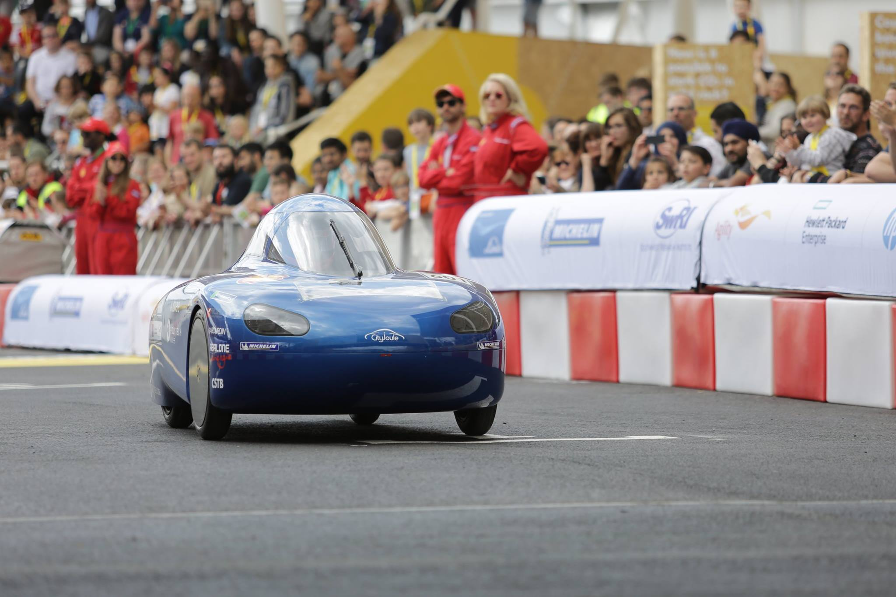
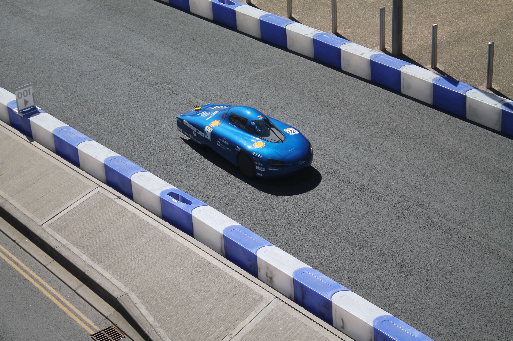
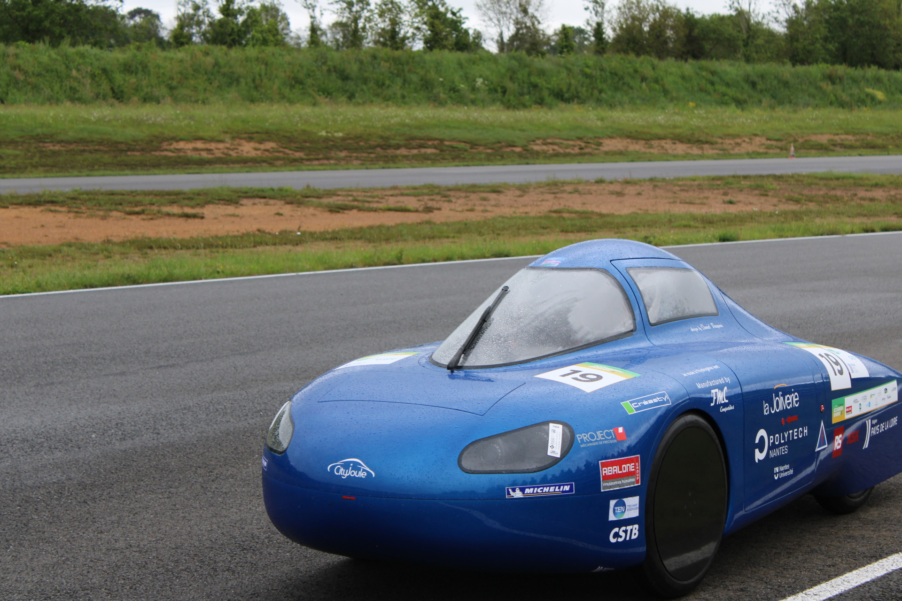
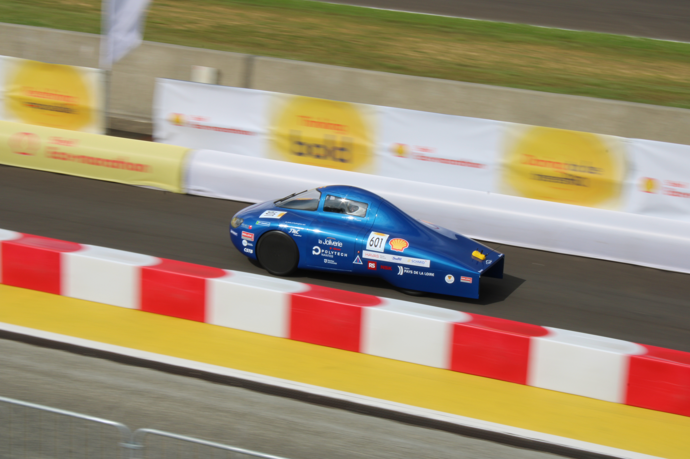

Informations sur les véhicules
L'Urban-concept
L'Urban-concept (éco-citadine en français) est la catégorie supérieure à celle des prototypes car elle est soumise à des critères plus pointus. Contrairement aux prototypes, l'Urban possède 4 roues, le pilote est assis, le véhicule dispose de tous les éclairages réglementaires. Il est conçu pour transporter une personne de 70 kg à une vitesse moyenne de 30 km/h. Le but est de concevoir un véhicule le plus proche d'un véhicule de tous les jours.
Le véhicule Cityjoule a été inauguré le 20 mars 2013 à l'hôtel de région des Pays de la Loire. Son développement a duré 3 ans, de l'idée de départ jusqu'à la première course. Il a permis d'impliquer plus de 400 élèves jusqu'à aujourd'hui ainsi que de nombreux partenaires scientifiques et techniques régionaux.




véhicule Polyjoule
Le véhicule Polyjoule a vu le jour en 2005, en même temps que la création de l'association. Il concourt dans la catégorie des prototypes électriques, un type de véhicule axé sur la performance où la réglementation est plus souple et les contraintes techniques limitées. L'objectif principal est d’optimiser au maximum le véhicule afin de minimiser sa consommation d’énergie. Aujourd’hui, Polyjoule affiche un poids inférieur à 27 kg, résultat d’un travail poussé sur la légèreté et l’efficacité.